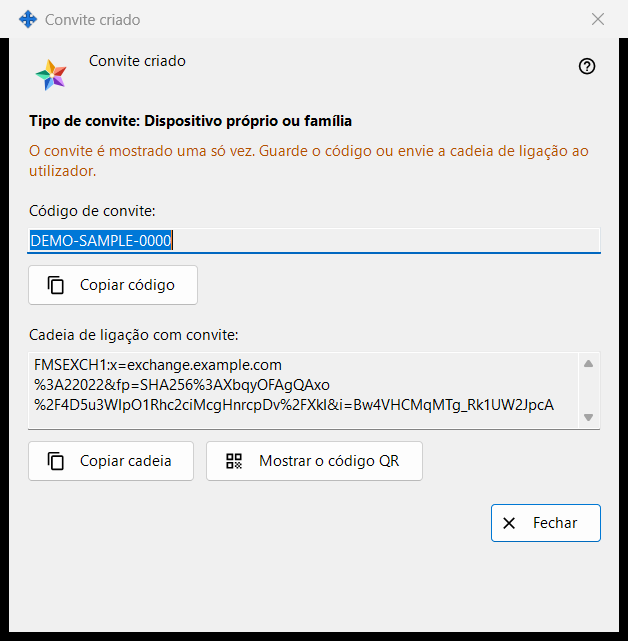
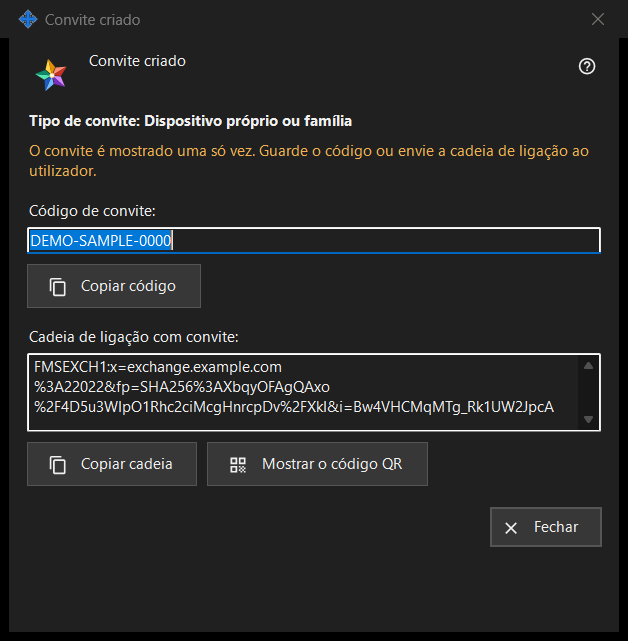

Convite criado
Finalidade
Esta janela mostra um convite novo uma só vez, logo a seguir a «Criar» na janela «Criar convite». Contém o código de uso único e, quando o programa do servidor de troca consegue criá-la, uma string de conexão que já inclui o código.


Nesta ordem
- Verifique a linha «Tipo de convite: ..».
- Pressione «Copiar código», ou «Copiar string» para a string com o convite, ou «Mostrar o código QR».
- Entregue o resultado à pessoa por um canal de confiança.
- Pressione «Fechar». O mesmo código não volta a ser mostrado.
Os elementos
Tipo e aviso
A linha em negrito «Tipo de convite: Dispositivo próprio ou família» indica o tipo escolhido. A linha na cor de aviso diz «O convite é mostrado uma só vez. Guarde o código ou envie a string de conexão ao usuário.» Quando a janela se fecha, o código e a string são apagados dela. Se um deles se perder, revogue o convite na lista e crie um novo.
Código de convite
«Código de convite:» mostra o código em uma caixa somente leitura. «Copiar código» o copia como segredo, sem passar pelo histórico da área de transferência do Windows (Win+V) nem pela área de transferência na nuvem, e a linha abaixo diz «Código de convite copiado para a área de transferência.» ou «Não foi possível copiar o código para a área de transferência.»
String de conexão com o convite
«String de conexão com convite:» só aparece quando foi possível criar a string. Indica o servidor e leva o código, por isso trate-a como o código: «Copiar string» também a copia como segredo. Não contém a senha da sua conta.
Código QR
«Mostrar o código QR» abre uma imagem da string com o convite. Qualquer pessoa que a veja pode usar o convite, por isso mostre-a apenas à pessoa a quem se destina. Se não for possível criar a imagem, a linha diz «O código QR não está disponível neste momento.»
O que faz a outra pessoa
Na janela da conta de troca («Entrar..»), a pessoa cola a string com «Colar» ou abre um arquivo salvo. Uma string que contém um convite passa a janela para o registro: a pessoa escolhe um nome de usuário, digita uma senha duas vezes e pressiona «Criar a conta». Um convite errado ou já usado, ou um nome de usuário já ocupado, é recusado com uma mensagem.
Fechar
«Fechar» encerra a janela e apaga dela o código e a string. Aqui não é salvo mais nada.
Configurações do gerenciador · Configurações de compartilhamento SFTP · Configurações do servidor de troca